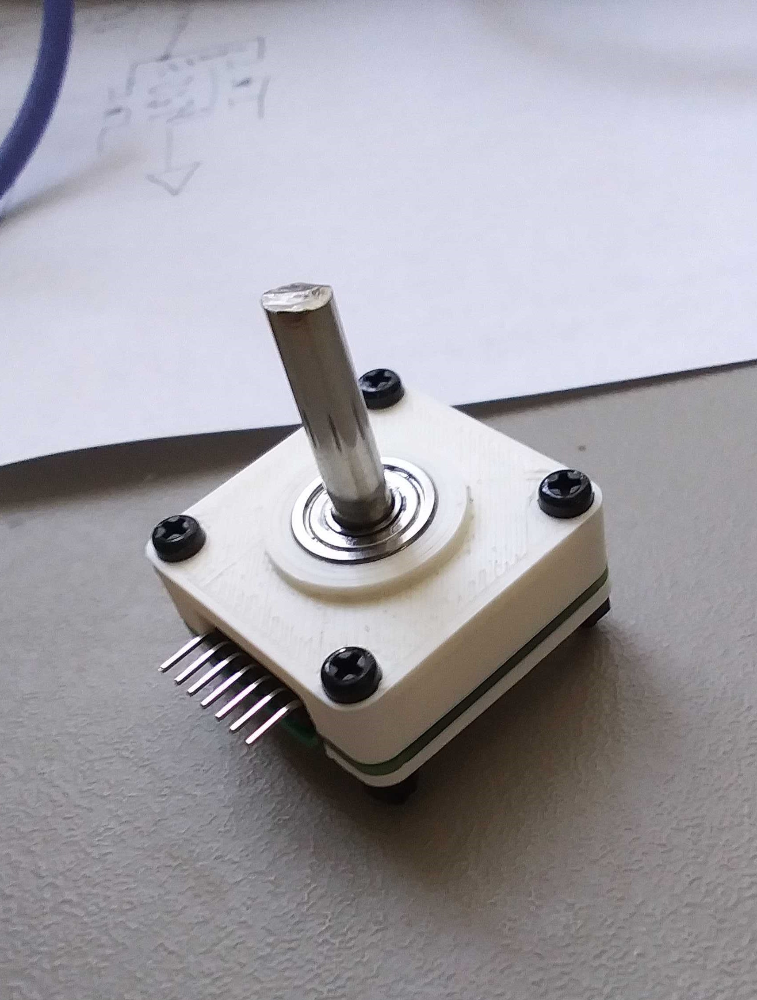
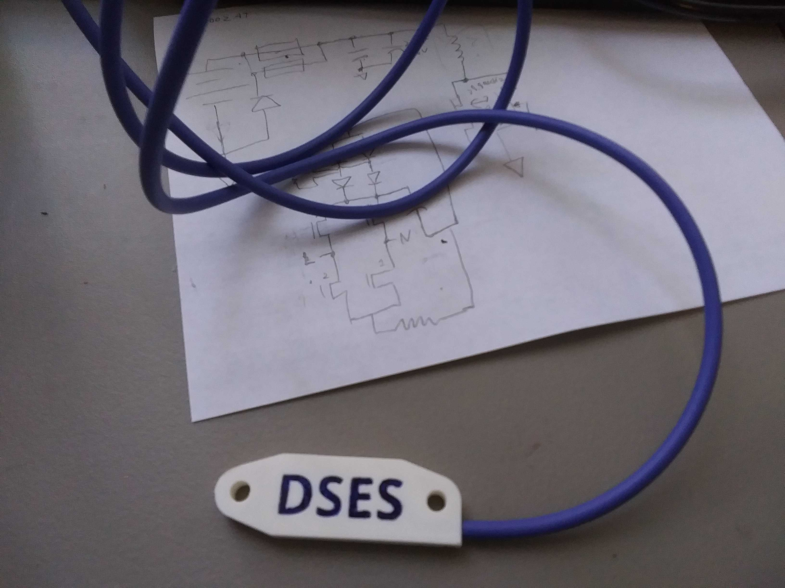
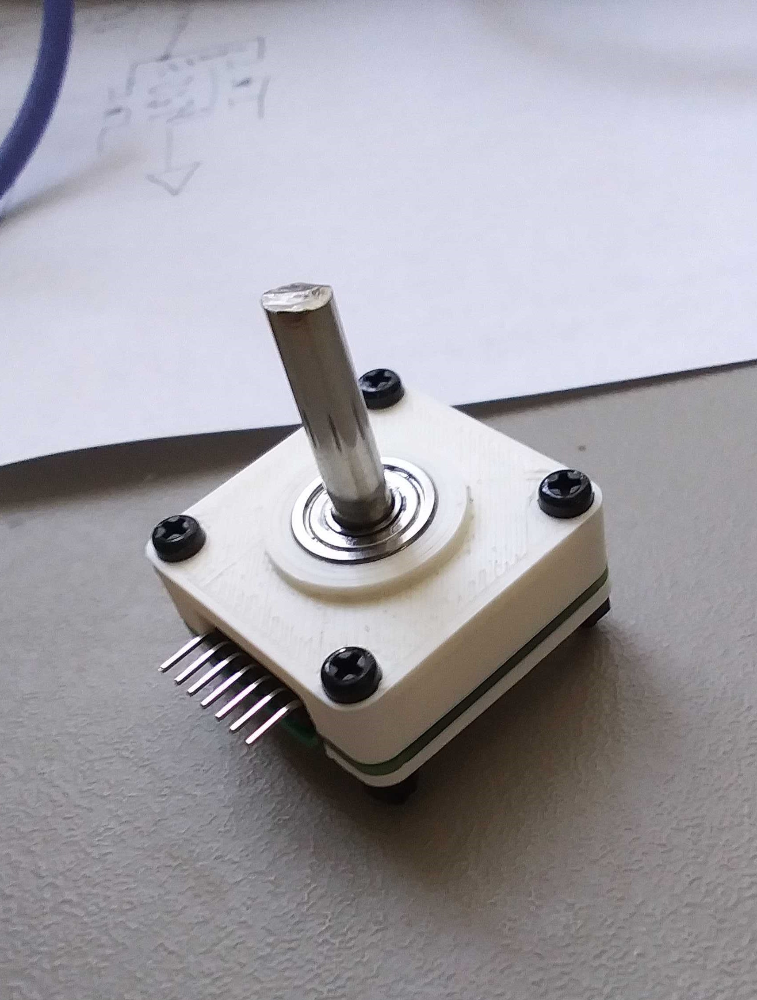
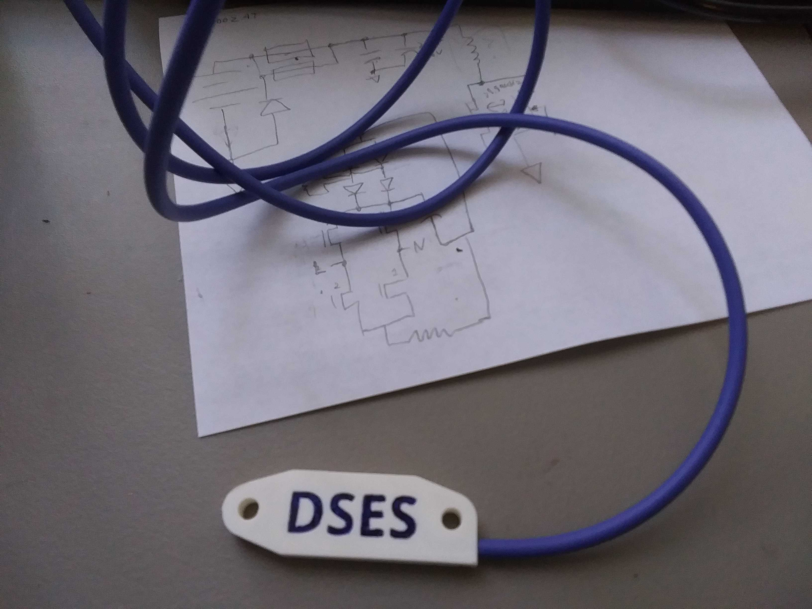
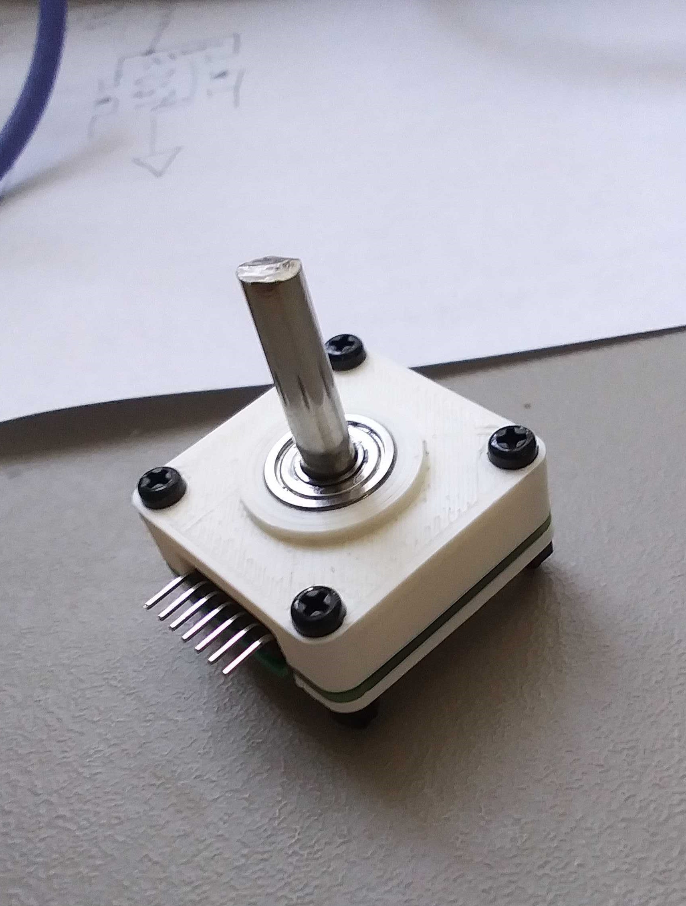
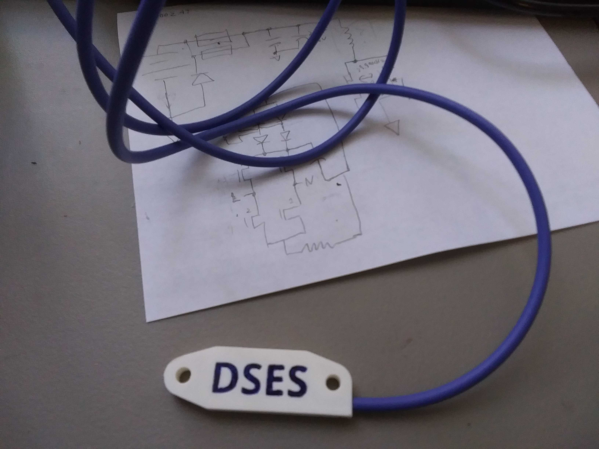

I built control electronics for a four-dish interferometer being constructed out at the
DSES site in Haswell, Colorado. Part of this was creating two custom 14 bit absolute encoders to hit cost targets.

